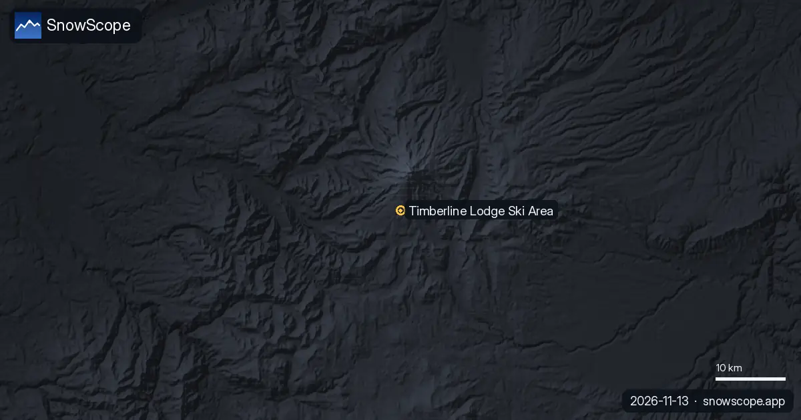

تذاكر وسط السيمانة مقابل الويكاند ف دجنبر: الفرق فالثمن فالغرب الأمريكي
أرخص حيلة باش تتزحلق ف دجنبر فالغرب الأمريكي ماشي فورفي ولا كوبون. هو الكالندري. سبع محطات فاللائحة ديالنا كيعلنو ثمن واضح ديال وسط السيمانة ولا ديال الضغط القليل، والفرق مع ثمن الويكاند هو فلوس حقيقية.
شوف توقعات التلج مباشرة ديال US West فالتطبيق ديال SnowScopeالعلو ديال التلج، التنبيهات والخريطة 3D، فابور.الفرق، محطة بمحطة
Ski Cooper (Colorado): 49 $ من الإثنين للجمعة خارج العطل، 99 $ فالويكاند والعطل. Lookout Pass (Idaho): 63 $ فوسط السيمانة بالحجز، 75 $ فالويكاند، 79 $ فمدة العطل. Montana Snowbowl: 78 $ فوسط السيمانة، 85 $ فالويكاند والعطل.
Mt. Baker (Washington): 98.80 $ من الإثنين للخميس خارج العطل، 115.42 $ من الجمعة للحد والعطل، بلا الضريبة. Timberline (Oregon): 129 $ فالضغط القليل، 161 $ فأيام الضغط، اللي فيهم الويكاند ومدة 21 دجنبر حتى فاتح يناير. White Pass (Washington): أونلاين من 69 $ فالضغط القليل ومن 89 $ فأيام الضغط، كيزيدو مع ما كيتباعو الأيام.

استثناء وحد: أيام الضغط ديال Wolf Creek هي تواريخ، ماشي ويكاند
Wolf Creek فColorado ماكيفرقش بين أيام السيمانة. التيكي ديال الكبار ثمنه 96 $ فالأيام العاديين و110 $ فأيام الضغط، وف دجنبر أيام الضغط هوما 20 حتى 23 دجنبر و26 حتى 31 دجنبر. نهار السبت ديال دجنبر قبل 20 هو عندهم نهار عادي.
واش التلج كاين فنهار وسط السيمانة فنص دجنبر؟
التوفير ديال وسط السيمانة كيستاهل غير إلا كان التلج موجود. فالتاريخ ديالنا، النسبة ديال الشتوات اللي فيها 20 in (50 سم) ولا كثر فنص الجبل نهار 15 دجنبر هي 93 % فMt. Baker، 87 % فWhite Pass، 85 % فLookout Pass، 83 % فMontana Snowbowl، 78 % فTimberline، 72 % فWolf Creek و70 % فSki Cooper.
العلوات العاديين فنص الجبل فهاد التاريخ كيتراوحو بين 26 in (66 سم) فSki Cooper و46 in (116 سم) فMt. Baker و52 in (132 سم) فTimberline.
كيفاش تستافد منها
خطط لرحلة من الإثنين للخميس فالسيمانة الثانية ولا الثالتة ديال دجنبر: كتفادى أثمنة الويكاند ومدة العطل، والتاريخ ديالنا كيقول بلي فرص التلج المزيان راهي ديجا عالية فمعظم هاد المحطات. زيد نهار الجمعة فSki Cooper وتخلص ثمن وسط السيمانة؛ زيد السبت وتخلص ثمن الويكاند.
نصايح للي كيتزلجو
- خود يومين ديال وسط السيمانة بدل ويكاند طويل: هي أرخص ترقية فالتزحلق.
- تفادى 21 دجنبر حتى فاتح يناير فTimberline و20 حتى 31 دجنبر فWolf Creek إلا كان الثمن هو الأهم.
- حجز White Pass بكري باش تستافد من أقل ثمن ديال الضغط القليل، وخبي Lookout Pass للتخفيض ديال وسط السيمانة.
- Mt. Baker كتبيع غير فعين المكان: دير معاك كارط ولا الفلوس وجي بكري.
المراجع والمصادر
- Ski Cooper, day pass 2026-27 (official) www.skicooper.com/cooper-day-pass/
- Lookout Pass, lift tickets 2026-2027 (official) skilookout.com/lift-tickets/
- Montana Snowbowl, lift tickets 2026/27 (official) montanasnowbowl.com/sbblog/lift-tickets/
- Mt. Baker Ski Area, daily lift tickets (official) www.mtbaker.us/tickets-and-passes/daily-lift-tickets/
- Timberline Lodge, winter lift tickets 2026/2027 (official) www.timberlinelodge.com/activities/winter/lift-tickets/
- White Pass, online day tickets 2026/27 (official) skiwhitepass.com/online-day-ticket-sales
- Wolf Creek Ski Area, tickets and passes 2026-2027 (official) wolfcreekski.com/tickets-passes/
على هاد الأرقام
أرقام التلج: التاريخ ديال التلج ديال SnowScope، 46 شتوة اللي فاتت (1980-81 حتى ل 2025-26) فالعلوات المكتوبة (التحت، الوسط، الفوق)، إعادة بناء ديال التلج اللي فات لمنطقة مصححة بالعلو (على أساس ERA5-Land؛ Snow_Hydro 1 كم للمغرب)، ماشي البلاغات ديال المحطة. التلج دابا: الخريطة ديال SnowScope. التيليسييجات والبيستات والعلوات: الخرايط ديال OpenSkiMap. الأثمنة: الصفحات الرسمية اللي لتحت، متشافة نهار 13 نونبر 2026؛ الأثمنة الدينامية كتبدل مع التاريخ والطلب.
كيفاش تستاشهد بهاد المقال
للبحث، التعليم ولا الصحافة: الأرقام والرسومات تقدر تعاود تخدم بيهم بحرية تحت CC BY 4.0 مع هاد الاستشهاد.
SnowScope (2026), تذاكر وسط السيمانة مقابل الويكاند ف دجنبر: الفرق فالثمن فالغرب الأمريكي, https://snowscope.app/blog/ar/2026/11/weekday-vs-weekend-ski-tickets-december-us-west.html, تشاف ف 2026-11-15
SnowScope (Atlas Labs). (2026, November 15). تذاكر وسط السيمانة مقابل الويكاند ف دجنبر: الفرق فالثمن فالغرب الأمريكي. SnowScope snow reports. https://snowscope.app/blog/ar/2026/11/weekday-vs-weekend-ski-tickets-december-us-west.html
BibTeX
@misc{snowscope2026weekdayvsweekendskiticke,
author = {{SnowScope (Atlas Labs)}},
title = {تذاكر وسط السيمانة مقابل الويكاند ف دجنبر: الفرق فالثمن فالغرب الأمريكي},
year = {2026},
month = nov,
howpublished = {\url{https://snowscope.app/blog/ar/2026/11/weekday-vs-weekend-ski-tickets-december-us-west.html}},
note = {Published 2026-11-15 09:34 UTC; accessed 2026-11-15}
}· CC BY 4.0 · الطريقة، الداتا والأدوات →
تابع US West
فابور: ميساج ملي يجي التلج، والتوقعات كل صباح.
تقارير أخرى ديال التلج

التيكي ديال الكبار فـLookout Pass لـ2026-2027 هو 63 $ وسط السيمانة بالحجز، و75 $ فالويكاند. نص الجبل كان فيه 20 in (50 cm) حتى 15 دجنبر ف85 % ديال الشتوات اللي فاتو.

فورفي النهار الكامل ف Timberline هو 129 $ فوقت العادي و161 $ فوقت الذروة؛ فورفي العشية هو 96 $ فوقت العادي. الوسط ديال الجبل كيبقى عادة عندو 52 in (132 cm) حتى ل15 دجنبر.

Ski Cooper خلات ثمن الكبار وسط السيمانة فـ49 $ لـ2026-27 (99 $ فالويكاند). نص الجبل فالغالب فيه 26 in (66 cm) ديال التلج ف15 دجنبر، 70 % ديال الشتوات فوق 20 in.